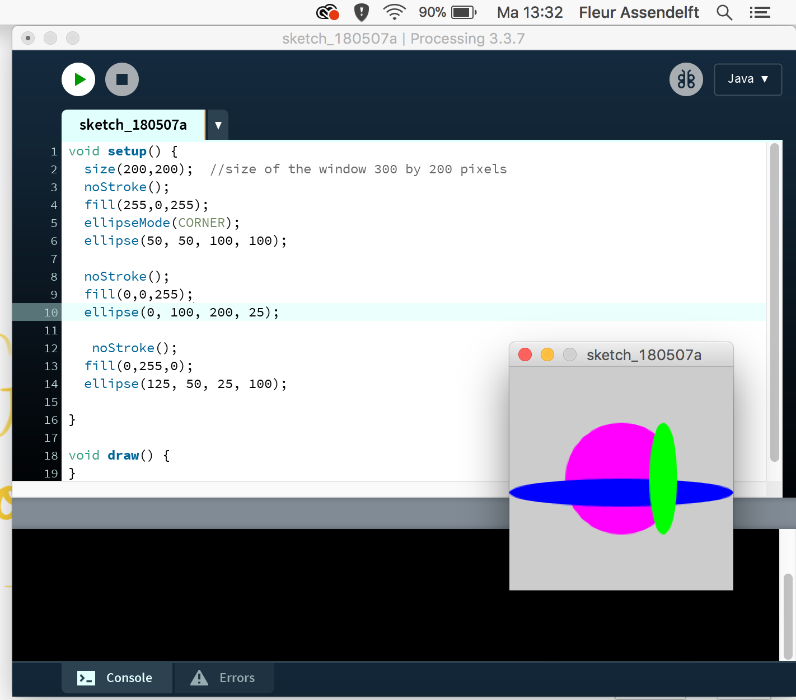
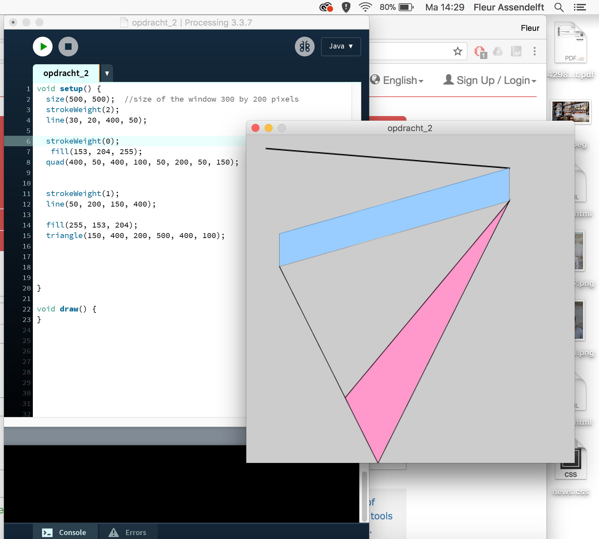
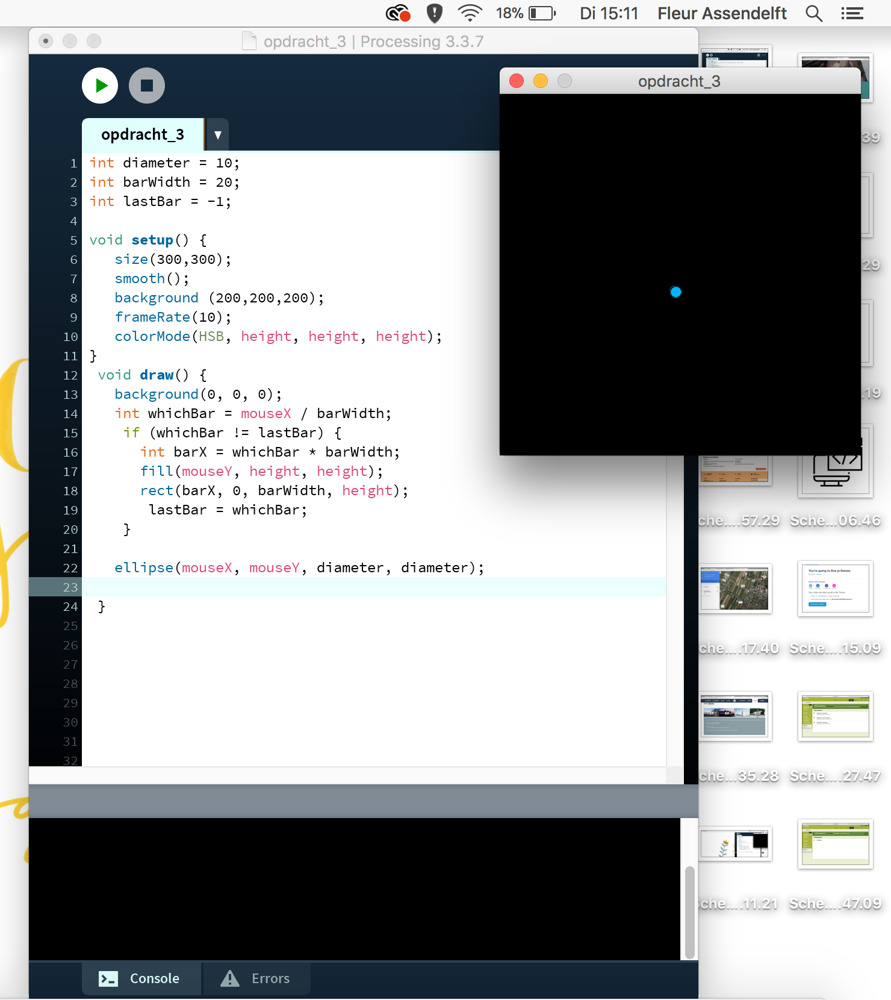
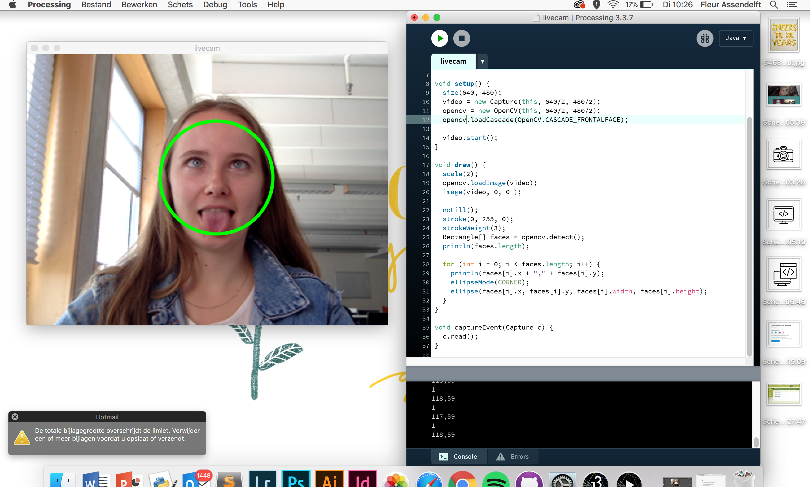
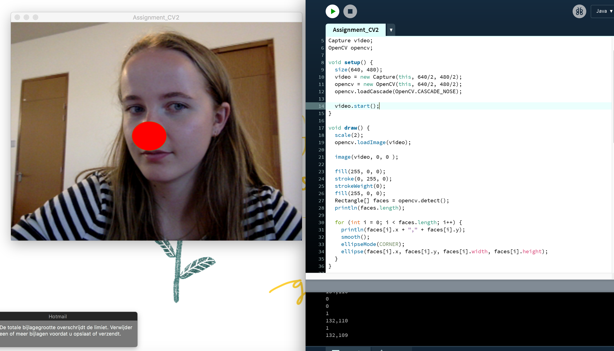
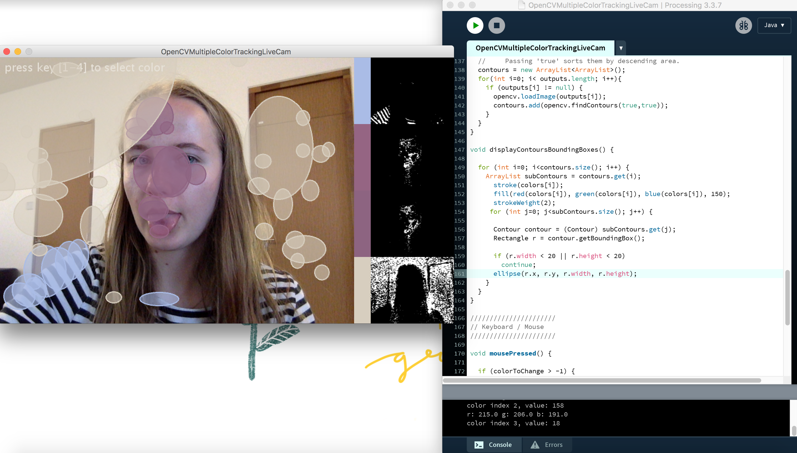

Assignment 1

Bij deze opdracht worden er veschillende vormen getekent. Het zijn allemaal ellipse(rondjes). de getallen achter de haakjes geven verschillende data weer (x,y, x1, y1). x is het getal op de x-as waar het rondje begint. Het zelfde geld voor y. x1 en y2 zijn de getallen op de as waar het rondje eindigd. Hiermee kun je bepalen hoe breed en lang het rondje wordt. De kleuren heb ik gedaan aan de hand van fill en de rgb code voor de kleuren.
Assignment 2

Bij deze opdracht moest ik random vormen tekenen. Ik heb er voor gezorgd dat de figuren op bepaalde punten elkaar raken. Dit was nog best lastig. Hierbij heb ik ook weer de punten van de x en y gepakt.
Assignment 3

Bij deze opdracht veranderd de achtergrond als je over het scherm gaat. Het is een zwart vlak en de muis en het vlak worden dezelfde kleur namate je ervoer heen gaat. het wordt alle kleuren van de regenboog.
Assignment CV1

Bij deze opdracht wordt mijn gezicht herkend en daar omheen een rondje gezet. Het perfect rond krijgen in het midden van je gezicht was nog best lastig. Uiteindelijk was het een klein stukje code wat hier voor zorgde. Namelijk ellipseMode(corner);
Assignment CV2

Bij deze opdracht wordt je gezicht herkend, net als in de vorige odpracht. Ik heb de code aangepast zodat het je neus herend ipv je hele gezicht.
Assignment CV3

Bij deze opdracht heb ik de code een beetje aangepast. Ipv vakjes zijn het nu rondjes als je kleuren detecteerd. Dit vind ik mooier en handiger.